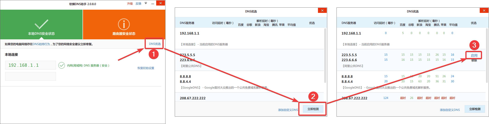
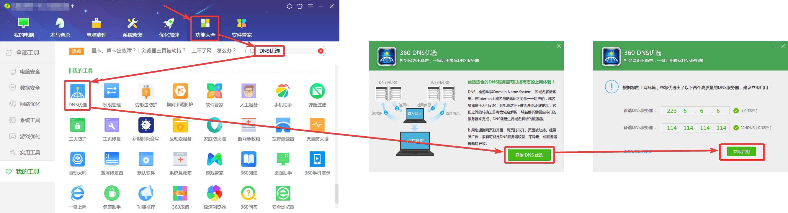
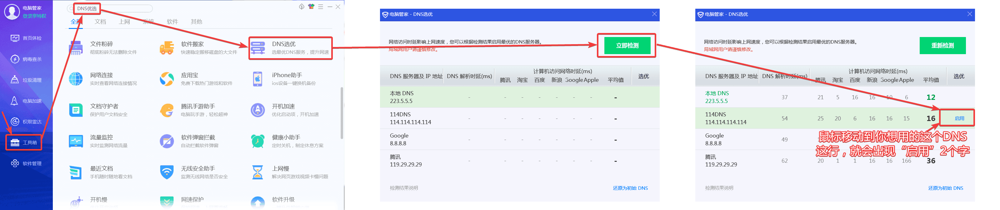

● NS污染—简介
（如你想了解一下何为“DNS污染”以及为何要改DNS，可以看下，否则可直接看后面的内容）
● DNS即域名系统，作用是将访问时的域名解析为IP地址，因此使用一个合适的DNS服务器不仅可以提高访问速度，也可以避免DNS劫持（也叫做DNS污染）。
● 前面的介绍你看不懂也没关系，简单明了一点：网络运营商（电信、联通、移动这类）通过操控DNS，可以控制你可以访问那些网站，不能访问哪些网站（一般是服务器在国外的网站），甚至直接投放广告到你的电脑里。
● DNS污染的影响：
1. 有些网站的解析打开变得很慢。
2. 有些网站无法解析打开。
3. 甚至被运营商投放广告。
● 下面教大家如何改成公共DNS(阿里，百度、腾讯、谷歌都提供了公共DNS)，公共DNS一般不会有上述问题。
● 更改DNS：
○ 这里讲解电脑上改DNS，如果需要改路由器上的DNS，请百度。
1.这里以 “软媒DNS工具”、“360安全卫士” 和 “QQ电脑管家” 这3款软件为例子进行讲解。
2.这3款软件都可以比较简单的改 DNS。
3.当然，如果你知道怎么改 DNS，或者有其他改 DNS 的工具，就可以不用管这些了。
| 目录（任选其中一个更改DNS即可） |
|---|
| 软媒DNS工具（软媒魔方里的一个工具） |
| 360安全卫士（提供提取的单独工具包，可以不用安装360卫士） |
| QQ电脑管家（提供提取的单独工具包，可以不用安装QQ电脑管家） |
● 软媒DNS工具：
2. 使用教程：（教程图片如无法放大看，可以保存到本地查看）
● 360安全卫士：（用的是360里面的的“DNS优选工具”）
2. 使用教程：（教程图片如无法放大看，可以保存到本地查看）
● QQ电脑管家：（用的是QQ管家里面的的“DNS优选工具”）
2. 使用教程：（教程图片如无法放大看，可以保存到本地查看）
● 至此，你的DNS就修改完毕了。因为DNS被劫持而产生的影响就能解决了。。。
● 声明一下：你电脑中的广告，不一定全是因为DNS劫持引起的，还有可能是一下流氓软件自带的广告，什么百度全家桶，搜狗输入法都是有后台广告的。